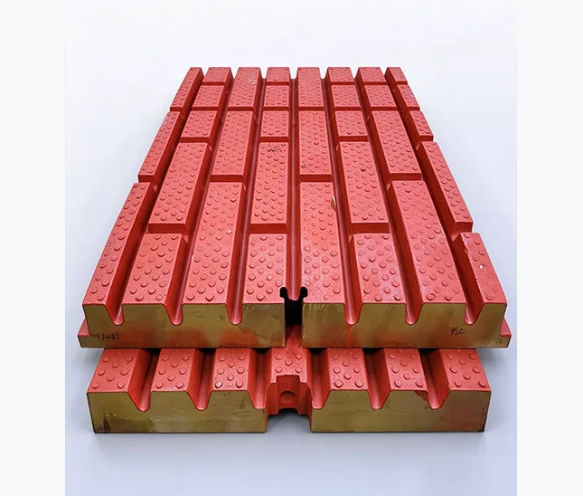
Инновационная
композитная отливка
В зависимости от различных материалов, дробилок, конструктивных особенностей и зон износа выбираются различные материалы и структуры для их композиционного соединения.
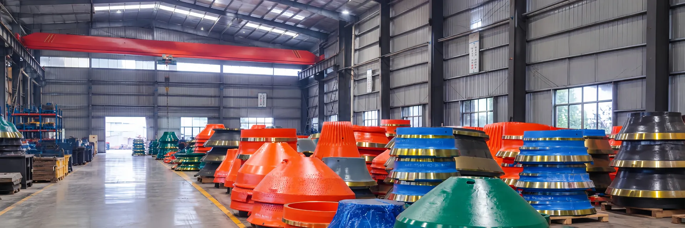

В зависимости от различных материалов, дробилок, конструктивных особенностей и зон износа выбираются различные материалы и структуры для их композиционного соединения.
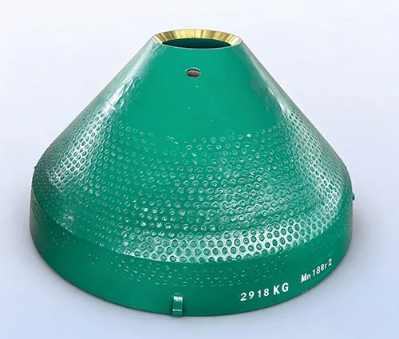
Для широко применяемых дробилок различных типов (конусных, щековых, роторных, молотковых, валковых и др.) в качестве базового материала по-прежнему используется легированная сверхвысокомарганцевая сталь и высокохромистый чугун.
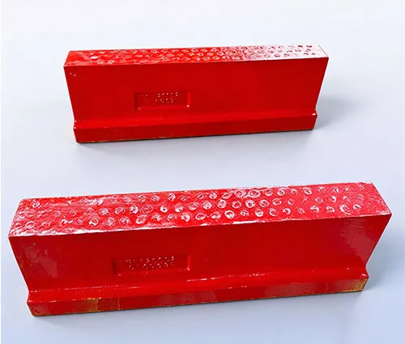
Наша технология является комплексной и зрелой, обеспечивает масштабное производство, а себестоимость производства контролируема. В основе — более высокая прочность, износостойкость и вязкость, а также лучшее соотношение цены и качества.
Сравнение: разница, которую вы видите
Детали, упрочнённые сплавными стержнями, способны продлить срок службы.
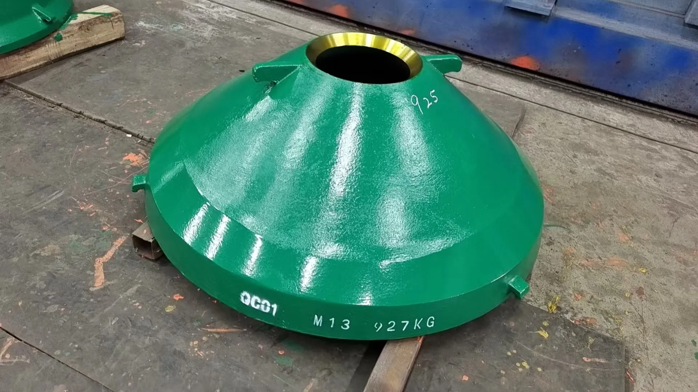
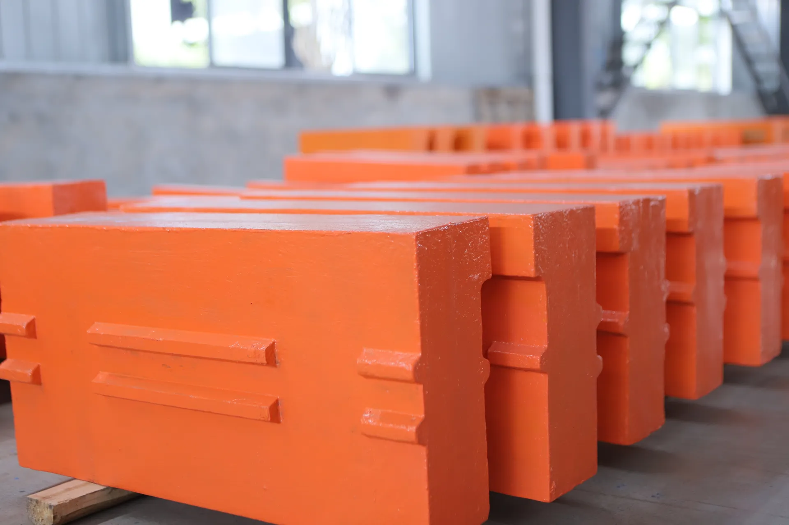


Широкий диапазон применения и длительный срок службы
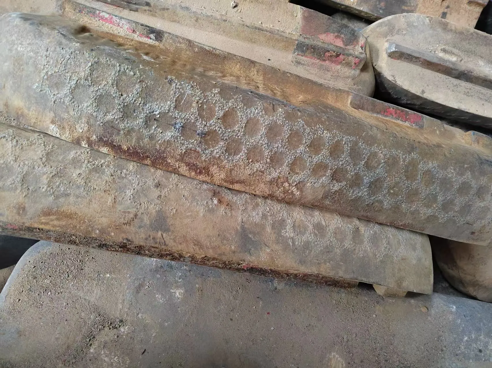
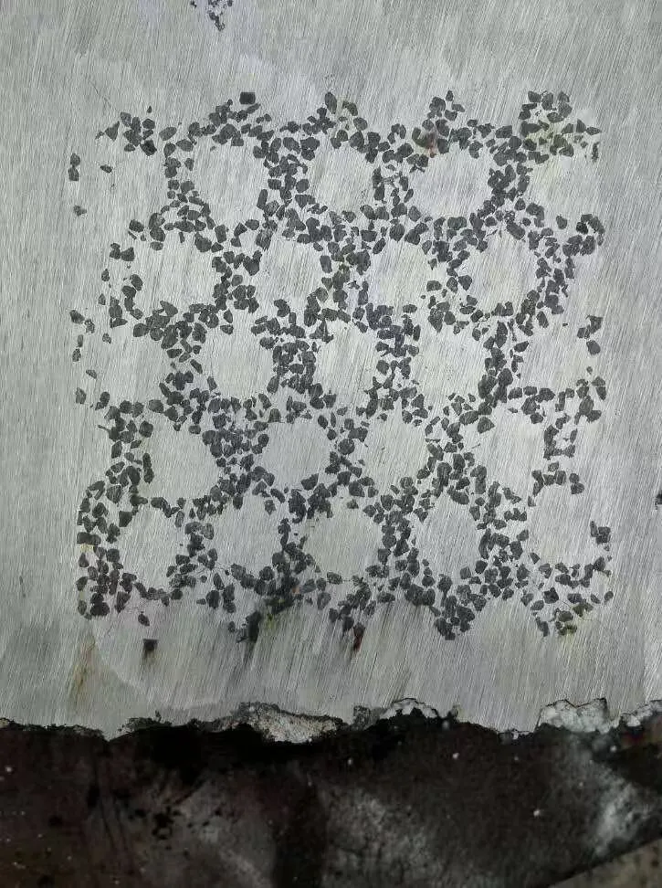
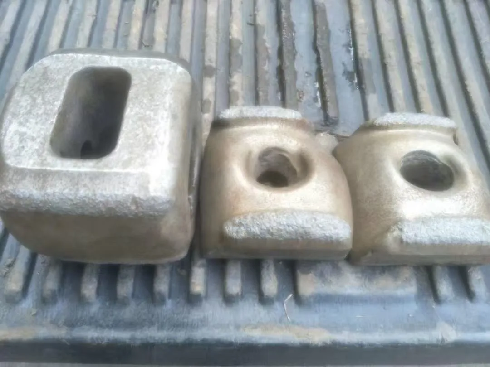
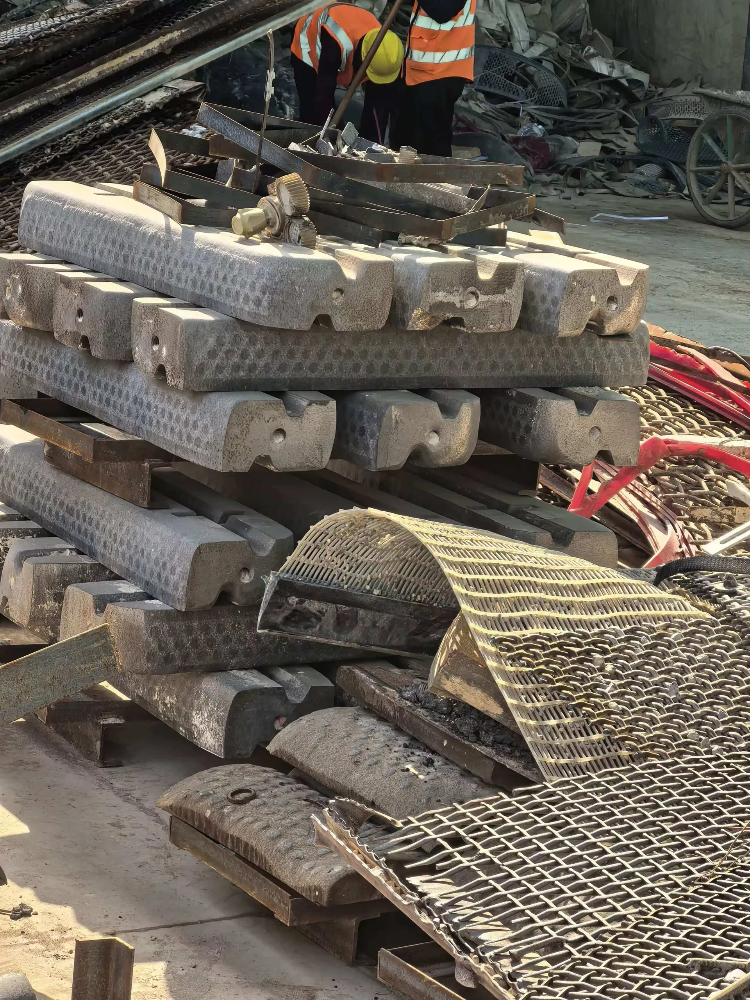


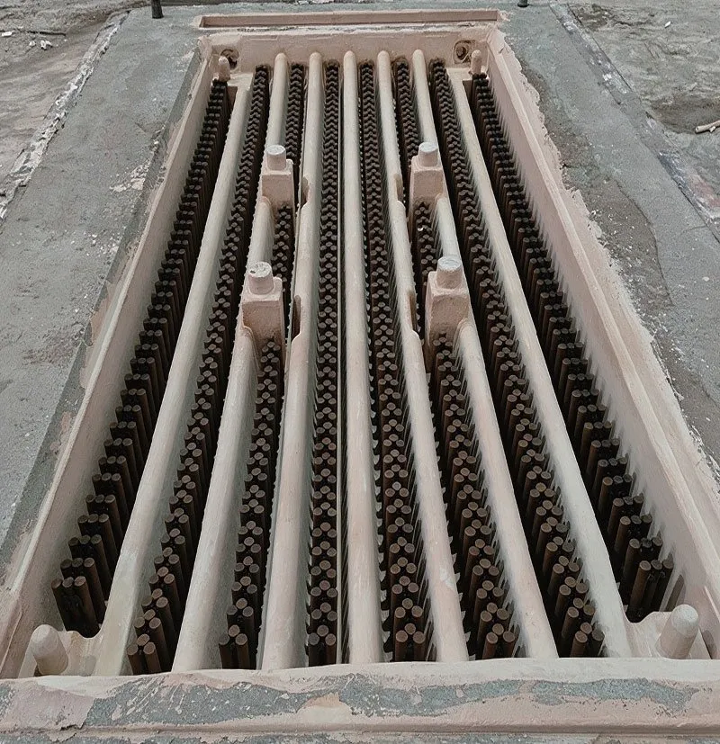

Оставьте заявку — ответим в течение рабочего дня и подскажем сроки поставки.

Найдите нас в WeChat по этому номеру: